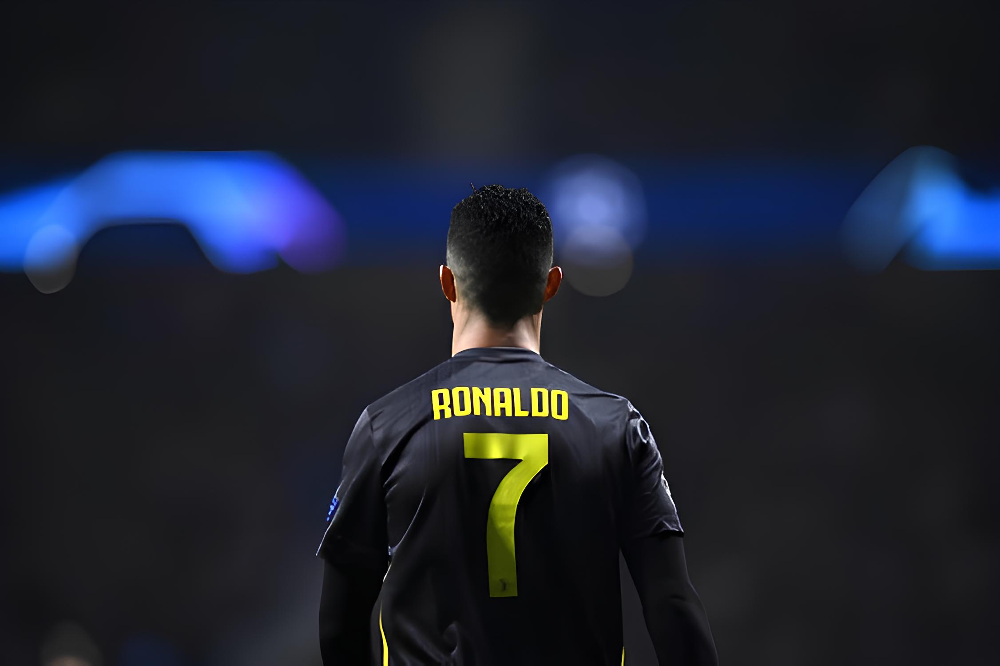

CR7
The Living Legend..
Cristiano Ronaldo dos Santos Aveiro GOIH ComM ( born 5 February 1985), better known as Ronaldo, is a Portuguese professional footballer who plays as a forward. He is the captain of the Portuguese national team and he is currently playing at Saudi Arabian football club Al Nassr. He is considered to be one of the greatest footballers of all time, and, by some, as the greatest ever.

Ronaldo began his senior career with Sporting CP, before signing with Manchester United in 2003, winning the FA Cup in his first season. He would also go on to win three consecutive Premier League titles, the Champions League and the FIFA Club World Cup; at age 23, he won his first Ballon d'Or. Ronaldo was the subject of the then-most expensive association football transfer when he signed for Real Madrid in 2009 in a transfer worth €94 million (£80 million). He became a key contributor and formed an attacking trio with Karim Benzema and Gareth Bale which was integral to the team winning four Champions League wins from 2014 to 2018, including La Décima. During this period, he won back-to-back Ballons d'Or in 2013 and 2014, and again in 2016 and 2017. One of the world's most marketable and famous athletes, Ronaldo was ranked the world's highest-paid athlete by Forbes in 2016, 2017, and 2023, and the world's most famous athlete by ESPN from 2016 to 2019. Time included him on their list of the 100 most influential people in the world in 2014. He is the first footballer and the third sportsman to earn US$1 billion in his career.


-
Manchester United
- Premier League: 2006–07, 2007–08, 2008–09
- FA Cup: 2003–04
- Football League Cup: 2005–06, 2008–09
- FA Community Shield: 2007
- UEFA Champions League: 2007–08
- FIFA Club World Cup: 2008
-
Real Madrid
- La Liga: 2011–12, 2016–17
- Copa del Rey: 2010–11, 2013–14
- Supercopa de España: 2012, 2017
- UEFA Champions League: 2013–14, 2015–16, 2016–17, 2017–18
- UEFA Super Cup: 2014, 2017
- FIFA Club World Cup: 2014, 2016, 2017
-
Al Nassr
- Arab Club Champions Cup: 2023
-
Individual
- FIFA Ballon d'Or/Ballon d'Or: 2008, 2013, 2014, 2016, 2017
- FIFA World Player of the Year: 2008
- The Best FIFA Men's Player: 2016, 2017
- FIFA Puskás Award: 2009
- La Liga Best Player: 2013–14
- European Golden Shoe: 2007–08, 2010–11, 2013–14, 2014–15
3x The Best FIFA Men's Player

| 2017 |

|
Real Madrid |
| 2016 |
|
Real Madrid |
| 2008 |

|
Manchester United |
5x Winner Ballon d'Or

| 2017 |
| 2016 |
| 2014 |
| 2013 |
| 2008 |
/origin-imgresizer.eurosport.com/2017/12/07/2225173-46402290-2560-1440.jpg)
Cristiano Ronaldo, widely regarded as one of the greatest football players of all time, has captivated the world with his extraordinary skills, unmatched athleticism, and relentless pursuit of excellence. From his early beginnings on the small island of Madeira to his iconic career at renowned clubs like Sporting Lisbon, Manchester United, Real Madrid, and Juventus, Ronaldo’s journey has been nothing short of remarkable. In this extensive guest post, we will delve deep into the life, achievements, and legacy of Cristiano Ronaldo, chronicling his rise to stardom, his record-breaking feats, and his enduring impact on the world of football.